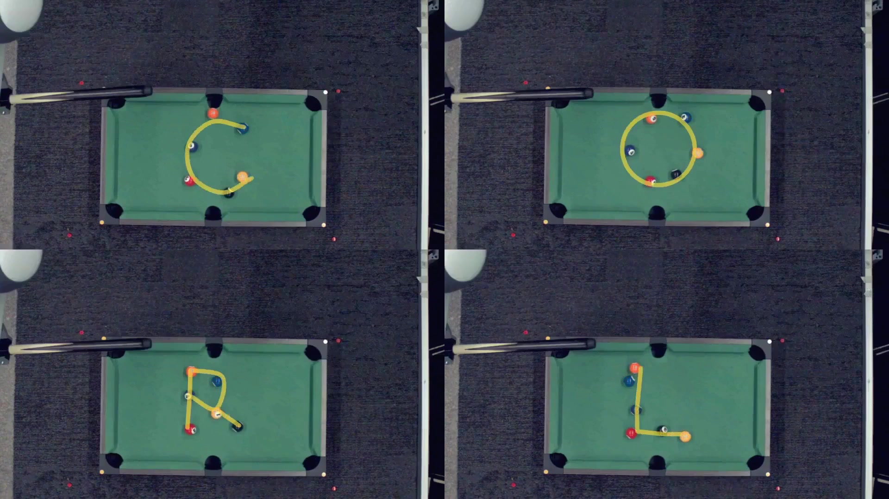

Blog

October 28, 2026 · Robotics · Real2Sim2Real
CUE: Closing the Dynamics Gap through Self-Directed Robotic Interaction
Is Real2Sim2Real Solved? What do we learn from this experience?
Read the article →
Is Real2Sim2Real Solved? What do we learn from this experience?
Read the article →